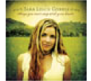
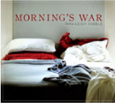
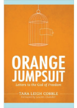
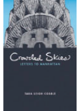
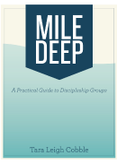
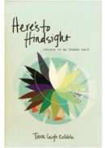

About Tara-Leigh
Author and musician Tara-Leigh Cobble possesses a unique trio of gifts -- as a conference keynote speaker, worship leader, and singer-songwriter, she has spent the past decade touring internationally. From Kansas to Korea, she has contributed to over 2,000 events for singles, college students, women's groups, and youth groups. While TLC began her career as a musician, she shines in the speaking opportunities that have come her way as a result of her books. Orange Jumpsuit: Letters to the God of Freedom, is the third in her spiritual memoir series. Another book in the series, Here's to Hindsight: Letters to My Former Self, was one of RELEVANT's all-time best sellers, and it prompted reviewers to hail her as “the female Donald Miller.“
RELEVANT, RELEVANT Leader, and Radiant have all featured her articles. Christian Single magazine (LifeWay) posted her as the cover story of its February 2008 issue. In addition, she recently contributed to The Voice Bible (a retelling of scripture published by Thomas Nelson), The One Year Life Verse Devotional (Tyndale), and writes curriculum, devotionals, and worship songs for NewSpring Church.
Her eighth and latest album, Come Back Soon, was inspired by a recent trip to the Holy Land. In the vein of Hillsong, Coldplay, and Mumford & Sons stripped-down acoustic songs alternate with soaring atmospheric tunes. The 11 tracks feature original worship songs and updated hymns, driven by an ardent longing for the return of Christ.
Whether playing a concert, leading worship, or speaking at a conference, TLC has a phenomenal ability to disarm any audience with her quick wit, candor, and engaging stage presence. Her passion is to help each listener grasp the unshakeable love of Christ, the frustration that comes from trying to live out one's own plans, and the beauty of embracing His will.TLC lives in Greenville, SC, where she has no pets, plants, or children, or anything else that might die if she forgets to feed it.
Word on the Streets
"With bold vulnerability and tender introspection, Tara-Leigh shares the journey of her heart through wounds, wins, and the wilderness. She boasts gladly in her weakness so that Christ’s power rests upon her." Lauren Chandler, Author & Speaker
"Tara-Leigh offers a refreshing and encouraging look at what it means to simply walk with Jesus." Lee McDerment, NewSpring Church, Worship Pastor
"I’m amazed at the way Tara-Leigh’s love for God has called and equipped her to reach not only this generation but those before and after hers as well." Kris Sqiatocho, The Singles Network Ministries, Director
"If you've never heard her laugh, you're missing out. If you've never heard her music, you're missing out even more." RELEVANT Magazine
Discography
Come Back Soon
2013"Reverent and beautiful, Come Back Soon engages the longing every Christian feels when we think about what, and Who, is to come."
— Josh Wilson, recording artistPlaying Favorites
2008Receiving regular rotation with the CoffeeHouse playlist. — Sirius Satellite Radio
- 
Things You Can't Stop With Your Hands
2004"...a must have." — Christian Single
- 
Morning's War
2010"A Psalm for 2011. Equal parts woe and wonder." — Chad Thomas Johnston, The Playground for Your Mind
Here's to Hindsight
2006"Brave and beautiful in tone, immaculate in execution." — Suite 101
Books
- 
Orange Jumpsuit: Letters to the God of Freedom
2011"This kind of encounter changes people. It changed me." — Annie Downs, author of From Head to Foot
- 
Crowded Skies: Letters to Manhattan
2008"If you like Tara-Leigh’s first book, Here’s to Hindsight, you are sure to love Crowded Skies. If you don’t like either of these books, it’s because you haven’t read them yet." —Josh Wilson, recording artist
- 
Mile Deep: A Practical guide to Discipleship Groups
2013"Mile Deep is both comprehensive and concise – an asset to leaders wanting to improve their small group format or relationships." — Erin, Discipleship Group Leader
- 
Here's to Hindsight: Letters to my Former Self
2006"...this book is frustratingly good. I grieved inishing it." — Matt Wertz, recording artist